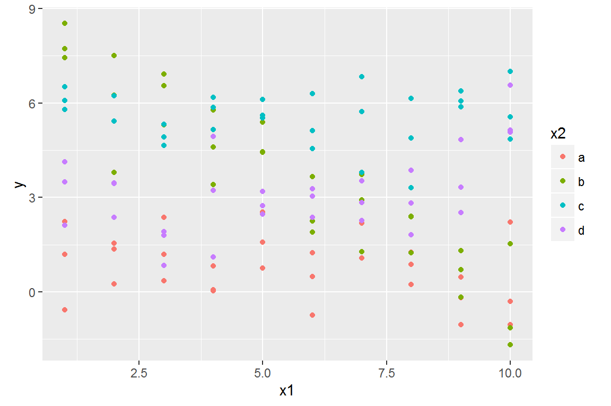
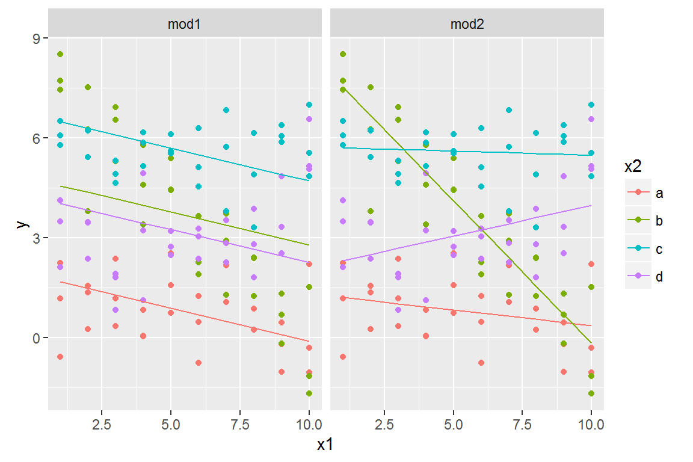
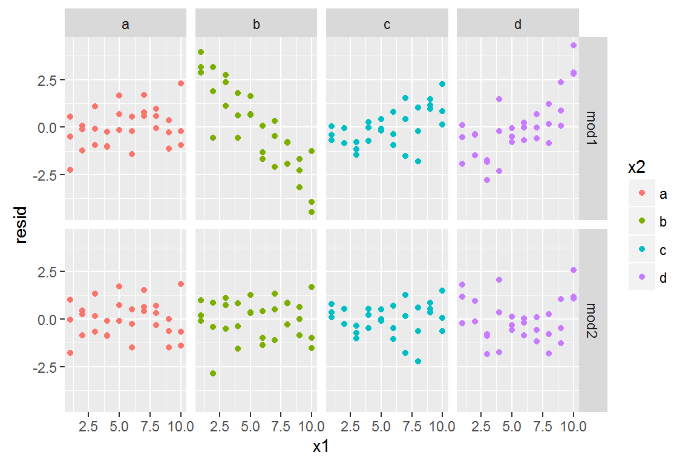
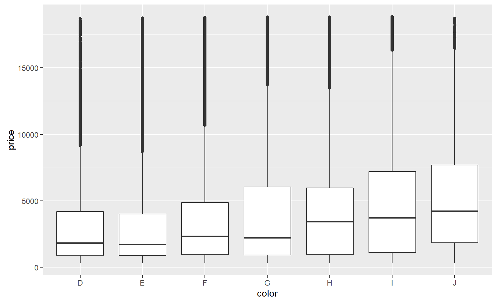
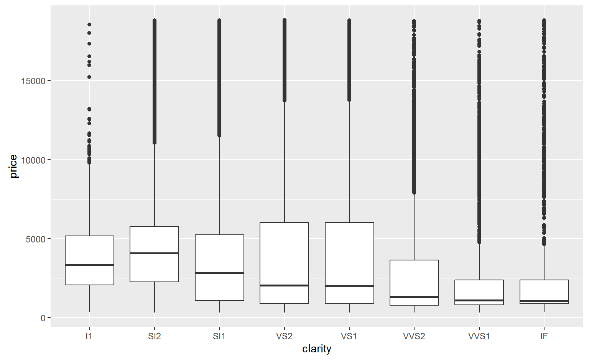
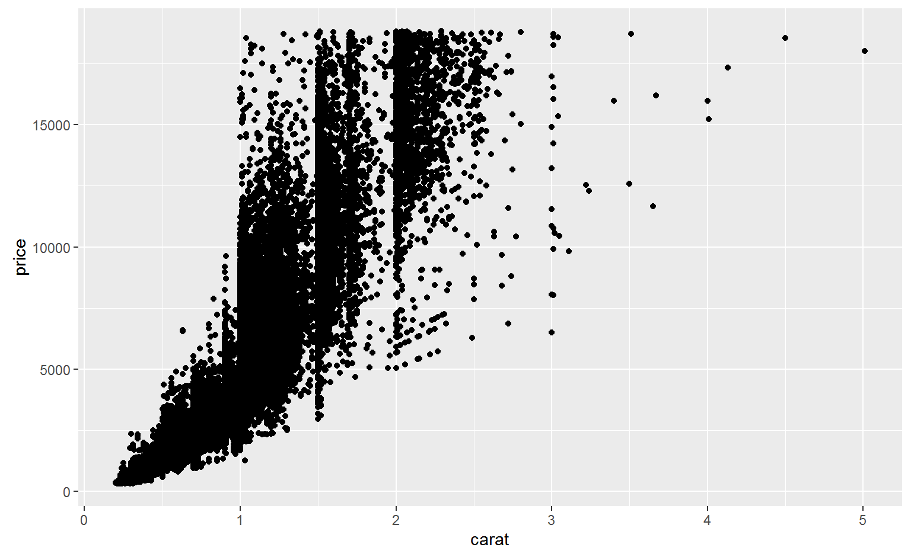
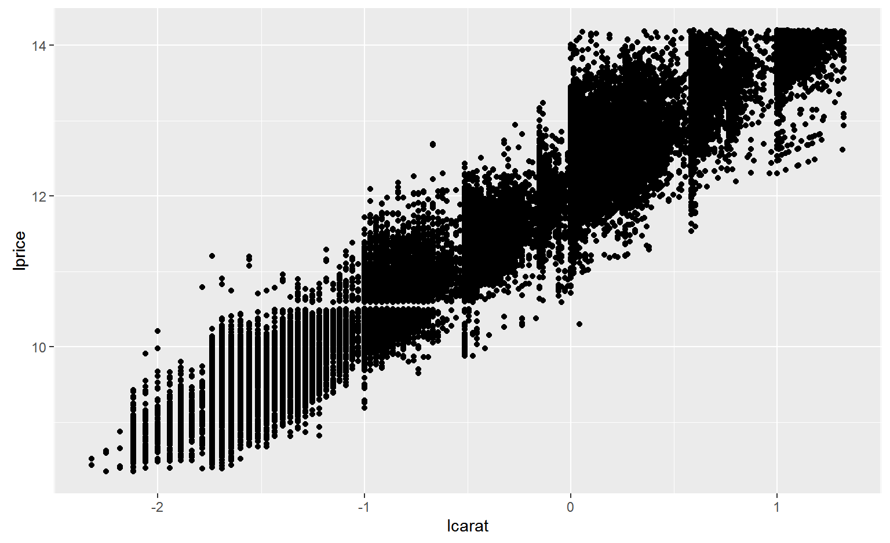

Why are low quality diamonds more expensive?
ggplot(diamonds, aes(cut, price)) + geom_boxplot()
Ranae Dietzel and Andee Kaplan
## Warning: package 'nycflights13' was built under R version 3.3.2ggplot(sim3, aes(x1, y)) +
geom_point(aes(colour = x2))
There are two possible models you could fit to this data:
mod1 <- lm(y ~ x1 + x2, data = sim3)
mod2 <- lm(y ~ x1 * x2, data = sim3)When you add variables with +, the model will estimate each effect independent of all the others. It’s possible to fit the so-called interaction by using *. For example, y ~ x1 * x2 is translated to y = a_0 + a_1 * a1 + a_2 * a2 + a_12 * a1 * a2. Note that whenever you use *, both the interaction and the individual components are included in the model.
To visualise these models we need two new tricks:
data_grid() both variables. It finds all the unique values of x1 and x2 and then generates all combinations.gather_predictions() which adds each prediction as a row. The complement of gather_predictions() is spread_predictions() which adds each prediction to a new column.Together this gives us:
grid <- sim3 %>%
data_grid(x1, x2) %>%
gather_predictions(mod1, mod2)
grid## # A tibble: 80 × 4
## model x1 x2 pred
## <chr> <int> <fctr> <dbl>
## 1 mod1 1 a 1.674928
## 2 mod1 1 b 4.562739
## 3 mod1 1 c 6.480664
## 4 mod1 1 d 4.034515
## 5 mod1 2 a 1.478190
## 6 mod1 2 b 4.366001
## 7 mod1 2 c 6.283926
## 8 mod1 2 d 3.837777
## 9 mod1 3 a 1.281453
## 10 mod1 3 b 4.169263
## # ... with 70 more rowsWe can visualise the results for both models on one plot using facetting:
ggplot(sim3, aes(x1, y, colour = x2)) +
geom_point() +
geom_line(data = grid, aes(y = pred)) +
facet_wrap(~ model)
Which model is better for this data? We can take look at the residuals.
sim3 <- sim3 %>%
gather_residuals(mod1, mod2)
ggplot(sim3, aes(x1, resid, colour = x2)) +
geom_point() +
facet_grid(model ~ x2)
ggplot(diamonds, aes(cut, price)) + geom_boxplot()
ggplot(diamonds, aes(color, price)) + geom_boxplot()
ggplot(diamonds, aes(clarity, price)) + geom_boxplot()
ggplot(diamonds, aes(carat, price)) +
geom_point()
diamonds2 <- diamonds %>%
filter(carat <= 2.5) %>%
mutate(lprice = log2(price), lcarat = log2(carat)) ##Identify linear pattern so we can remove it
mod_diamond <- lm(lprice ~ lcarat, data = diamonds2)grid <- diamonds2 %>%
data_grid(carat = seq_range(carat, 20)) %>%
mutate(lcarat = log2(carat)) %>%
add_predictions(mod_diamond, "lprice") %>%
mutate(price = 2 ^ lprice) ## # A tibble: 20 × 4
## carat lcarat lprice price
## <dbl> <dbl> <dbl> <dbl>
## 1 0.2000000 -2.32192809 8.289840 312.9613
## 2 0.3210526 -1.63911827 9.437897 693.5697
## 3 0.4421053 -1.17753819 10.213984 1187.7244
## 4 0.5631579 -0.82838862 10.801034 1784.1663
## 5 0.6842105 -0.54748780 11.273333 2475.2060
## 6 0.8052632 -0.31246777 11.668489 3255.1059
## 7 0.9263158 -0.11042399 12.008199 4119.3452
## 8 1.0473684 0.06676901 12.306126 5064.2274
## 9 1.1684211 0.22456026 12.571432 6086.6476
## 10 1.2894737 0.36678233 12.810560 7183.9430
## 11 1.4105263 0.49623358 13.028216 8353.7936
## 12 1.5315789 0.61501973 13.227939 9594.1507
## 13 1.6526316 0.72476514 13.412462 10903.1859
## 14 1.7736842 0.82674917 13.583935 12279.2526
## 15 1.8947368 0.92199749 13.744083 13720.8562
## 16 2.0157895 1.01134497 13.894309 15226.6312
## 17 2.1368421 1.09548031 14.035772 16795.3226
## 18 2.2578947 1.17497823 14.169437 18425.7712
## 19 2.3789474 1.25032335 14.296120 20116.9016
## 20 2.5000000 1.32192809 14.416515 21867.7116